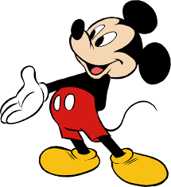
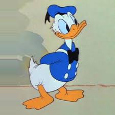
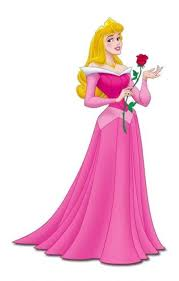
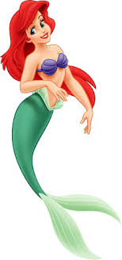
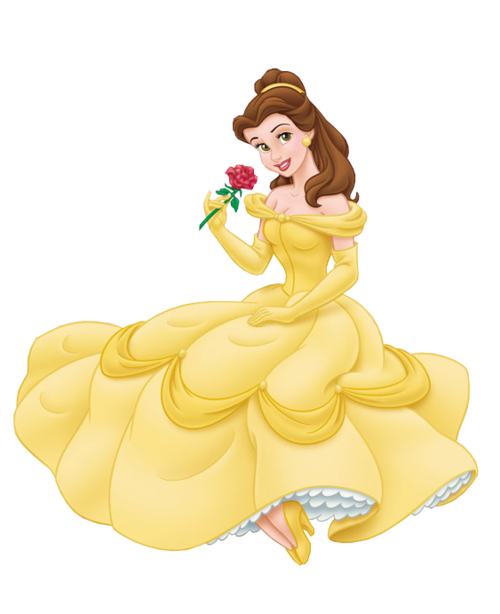
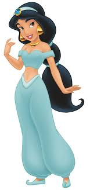
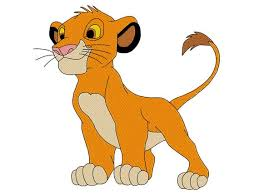
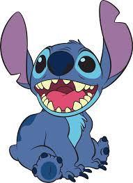
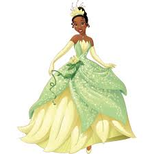
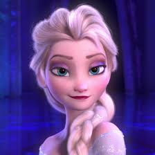

Quelques personnages Disney

Mickey Mouse est un personnage de fiction américain appartenant à l'univers Disney, apparaissant principalement dans des dessins animés, dans des bandes dessinées et des jeux vidéo. Il est apparu la première fois dans Plane Crazy qui est un court-métrage d'animation muet américain des studios Disney sorti en 1928.

Donald, est un personnage de fiction développé, entre autres, par l'animateur Dick Lundy en 1934 pour le compte des studios Disney. Sa première apparition au cinéma a lieu le 9 juin 1934 sous la forme d'un canard en costume marin, dans le film Une petite poule avisée.

La princesse Aurore est un personnage de fiction inspiré par le personnage du conte La Belle au bois dormant de Charles Perrault et des frères Grimm et qui est apparu pour la première fois dans le long métrage d'animation La Belle au bois dormant, en 1959.

Ariel est un personnage de fiction qui est apparu pour la première fois dans le long métrage d'animation : La Petite Sirène. Elle est inspirée du personnage du conte La Petite Sirène de Hans Christian Andersen. (1989)

Belle est un personnage de fiction des studios Disney, inspiré par le personnage du conte La Belle et la Bête de Jeanne-Marie Leprince de Beaumont. Elle est apparue pour la première fois dans le « Classique d'animation » La Belle et la Bête, en 1991.

Jasmine est un personnage de fiction qui est apparu pour la première fois dans le long métrage d'animation Aladdin (1992). Elle est inspirée du personnage de la Princesse Badroulboudour du conte Aladin et la Lampe merveilleuse des Mille et Une Nuits.

Simba est un personnage de fiction apparu pour la première fois dans le long métrage d'animation Le Roi lion (1994). Le personnage apparaît dans les suites et réadaptations: Le Roi lion 2 : L'Honneur de la tribu, Le Roi lion 3 : Hakuna Matata et Le Roi lion.

Stitch, est une créature extraterrestre de couleur bleue, fruit d'une expérience scientifique menée par Jumba, un savant fou. Stitch est l'animal de compagnie de Lilo avec qui il vit a Hawaï. Sa première apparution a été en 2002, dans le film Lilo et Stitch.

Tiana est un personnage de fiction qui est apparu pour la première fois en 2009 dans le long métrage d'animation La Princesse et la Grenouille. Cette jeune femme vit dans le vieux carré français de La Nouvelle-Orléans pendant les années 1920-1930. Serveuse, elle aspire à avoir son propre restaurant. Elle est apparu aussi dans le long métrage Ralph 2.0

La Reine Elsa d'Arendelle, aussi appelée la Reine des neiges de Hans Christian Andersen (1844)., est un personnage de fiction qui est apparu pour la première fois dans le 53ᵉ Classique d'animation des studios Disney, La Reine des neiges (2012)
Linda Castabonnel